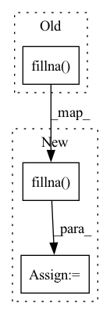

Pattern ID :27182
Before Change
def _get_processed_meta_info(self):
meta_info_norm = self.meta_info.sub(self.meta_info.mean(axis=1), axis=0) // .fillna(0.)
if self.fill_method == "max":
meta_info_norm = meta_info_norm.T.fillna(
meta_info_norm.max(axis=1)
) .T // fill it with row max to align with previous implementation
elif self.fill_method == "zero":
pass
else:After Change
// 2009-01-19 0.280603
// ...
// 2011-06-27 0.203773
meta_info_norm = meta_info_norm.T.fillna( fill_value) .T
elif self.fill_method == "zero":
// It will fillna(0.0) at the end.
passIn pattern: SUPERPATTERN
Frequency: 6
Non-data size: 3
Instances Fragment ID: 80839154
Project Name: microsoft/qlib
Commit Name: 32c3070b73feea6432609393761df75582c6f9b6
Time: 2023-04-07
Author: you-n-g@users.noreply.github.com
File Name: qlib/contrib/meta/data_selection/dataset.py
M Class Name: MetaTaskDS
N Class Name: MetaTaskDS
M Method Name: _get_processed_meta_info(1)
N Method Name: _get_processed_meta_info(1)
M Parent Class: MetaTask
N Parent Class: MetaTask
M File Name: qlib/contrib/meta/data_selection/dataset.py
N File Name: qlib/contrib/meta/data_selection/dataset.py
M Start Line: 184
M End Line: 187
N Start Line: 190
N End Line: 223
Before Change
if col_name in cat_features:
df[col_name].fillna("None", inplace=True)
elif is_numeric_dtype(df[col_name]):
df[col_name].fillna( df[col_name].mean(), inplace=True)
else:
df[col_name].fillna(df[col_name].mode(), inplace=True)
return df
After Change
if col_name in cat_features:
df[col_name].fillna("None", inplace=True)
elif is_numeric_dtype(df[col_name]):
df[col_name] = df[col_name].astype("float64").fillna( df[col_name].mean())
else:
df[col_name].fillna(df[col_name].mode(), inplace=True)
return df
Fragment ID: 80839159
Project Name: deepchecks/deepchecks
Commit Name: ed0fbeca9c6aecae7b3f2849258c87f62db85a19
Time: 2022-07-14
Author: jonatan.lib@gmail.com
File Name: deepchecks/utils/dataframes.py
M Class Name: AnonimousClass
N Class Name: AnonimousClass
M Method Name: default_fill_na_per_column_type(2)
N Method Name: default_fill_na_per_column_type(2)
M Parent Class:
N Parent Class:
M File Name: deepchecks/utils/dataframes.py
N File Name: deepchecks/utils/dataframes.py
M Start Line: 32
M End Line: 32
N Start Line: 28
N End Line: 32
Before Change
if isinstance(raw_count, str):
raw_count = pd.read_pickle(raw_count)
raw_count = raw_count.fillna( 0) .values // replace missing values with zeros
elif isinstance(raw_count, np.ndarray):
pass
else:After Change
elif isinstance(raw_count, pd.DataFrame): pass
else:
raise TypeError("Expecting str or np.array or pd.DataFrame object, but get a {}".format(type(raw_count)))
raw_count = raw_count.fillna( 0) // replace missing values with zeros
if isinstance(empty_profile, str):
empty_profile = pd.read_pickle(empty_profile)
empty_profile = empty_profile.fillna(0).values // replace missing values with zeros
elif isinstance(empty_profile, pd.DataFrame):
empty_profile = empty_profile.fillna(0).values // replace missing values with zeros
elif isinstance(empty_profile, np.ndarray):
empty_profile = np.nan_to_num(empty_profile) // replace missing values with zeros
elif not empty_profile:
print(" ... Evaluate empty profile from cells")
empty_profile = raw_count.sum()/raw_count.sum().sum()
empty_profile = empty_profile.fillna(0).values
else:
raise TypeError("Expecting str / np.array / None / pd.DataFrame, but get a {}".format(type(empty_profile)))
if empty_profile.squeeze().ndim == 1:
empty_profile = empty_profile.squeeze().reshape(1,-1).repeat(raw_count.shape[0], axis=0)
self.cellID = list(raw_count.index)
self.feature_names = list(raw_count.columns)
self.num_input_feature = raw_count.shape[1]
self.NN_layer1 = NN_layer1
self.NN_layer2 = NN_layer2 Fragment ID: 80839161
Project Name: novartis/scar
Commit Name: 232343d096beb9b652a3ca58e65b3e74e01a6e72
Time: 2022-02-16
Author: caibin.sheng@novartis.com
File Name: scAR/_scAR.py
M Class Name: model
N Class Name: model
M Method Name: __init__(8)
N Method Name: __init__(8)
M Parent Class:
N Parent Class:
M File Name: scAR/_scAR.py
N File Name: scAR/_scAR.py
M Start Line: 56
M End Line: 85
N Start Line: 85
N End Line: 119
Before Change
factors_to_explode.append(("item_factors", "if"))
if model.__str__() == "LightFMWrap":
pairs_with_features.fillna( {"user_bias": 0, "item_bias": 0})
if (
add_factors_mult
and user_factors is not NoneAfter Change
factors_to_explode.append(("item_factors", "if"))
if model.__str__() == "LightFMWrap":
pairs_with_features = (
pairs_with_features.fillna( {"user_bias": 0, "item_bias": 0})
.withColumnRenamed("user_bias", "{}_user_bias".format(prefix))
.withColumnRenamed("item_bias", "{}_item_bias".format(prefix))
)
Fragment ID: 80839165
Project Name: sb-ai-lab/replay
Commit Name: d0a2634547ce8dfce12158d83033fb3482f23b3b
Time: 2021-07-19
Author: AAVolodkevich@sberbank.ru
File Name: replay/utils.py
M Class Name: AnonimousClass
N Class Name: AnonimousClass
M Method Name: get_first_level_model_features(6)
N Method Name: get_first_level_model_features(6)
M Parent Class:
N Parent Class:
M File Name: replay/utils.py
N File Name: replay/utils.py
M Start Line: 515
M End Line: 515
N Start Line: 515
N End Line: 519
Before Change
cat_data = cat_data.apply(lambda x: pd.factorize(x)[0])
cat_data = enc.fit_transform(cat_data)
// handle numerical - calculate ranges per feature and fill numerical nan to minus np.inf
numeric_data = np.asarray(numeric_data.fillna(value=np.nan) )
numeric_feature_ranges = np.nanmax(numeric_data, axis=0) - np.nanmin(numeric_data, axis=0)
numeric_data = np.nan_to_num(numeric_data, nan=np.inf)
After Change
// handle categorical - transform to an ordinal numpy array
cat_data = np.asarray(cat_data.apply(lambda x: pd.factorize(x)[0])) if not cat_data.empty else np.asarray(cat_data)
// handle numerical - calculate ranges per feature and fill numerical nan to minus np.inf
numeric_data = np.asarray(numeric_data.fillna(value=np.nan) ).astype("float64")
numeric_feature_ranges = np.nanmax(numeric_data, axis=0) - np.nanmin(numeric_data, axis=0)
numeric_feature_ranges = np.where(numeric_feature_ranges == 0, 1, numeric_feature_ranges)
numeric_data = np.nan_to_num(numeric_data, nan=np.inf)
// do not warn on operations that include usage of math involving inf Fragment ID: 80839164
Project Name: deepchecks/deepchecks
Commit Name: 1bccb3be1e9fac83cab4137c4bea717fb2b363f6
Time: 2022-07-10
Author: 67195469+Nadav-Barak@users.noreply.github.com
File Name: deepchecks/utils/gower_distance.py
M Class Name: AnonimousClass
N Class Name: AnonimousClass
M Method Name: calculate_nearest_neighbours_distances(3)
N Method Name: calculate_nearest_neighbours_distances(3)
M Parent Class:
N Parent Class:
M File Name: deepchecks/utils/gower_distance.py
N File Name: deepchecks/utils/gower_distance.py
M Start Line: 87
M End Line: 92
N Start Line: 86
N End Line: 90
Before Change
@annotate("FillMissing_op", color="darkgreen", domain="nvt_python")
def transform(self, columns, gdf: cudf.DataFrame) -> cudf.DataFrame:
return gdf[columns].fillna( self.fill_val)
transform.__doc__ = Operator.transform.__doc__
After Change
gdf[f"{col}_filled"] = gdf[col].isna()
gdf[col] = gdf[col].fillna(self.fill_val)
else:
gdf[columns] = gdf[columns].fillna( self.fill_val)
return gdf
transform.__doc__ = Operator.transform.__doc__ Fragment ID: 80839166
Project Name: nvidia/nvtabular
Commit Name: 3ee573be671ef8004dce2ba45f45d801e91091eb
Time: 2021-02-11
Author: kmhigley@gmail.com
File Name: nvtabular/ops/fill.py
M Class Name: FillMissing
N Class Name: FillMissing
M Method Name: transform(3)
N Method Name: transform(3)
M Parent Class: Operator
N Parent Class: Operator
M File Name: nvtabular/ops/fill.py
N File Name: nvtabular/ops/fill.py
M Start Line: 47
M End Line: 47
N Start Line: 50
N End Line: 57